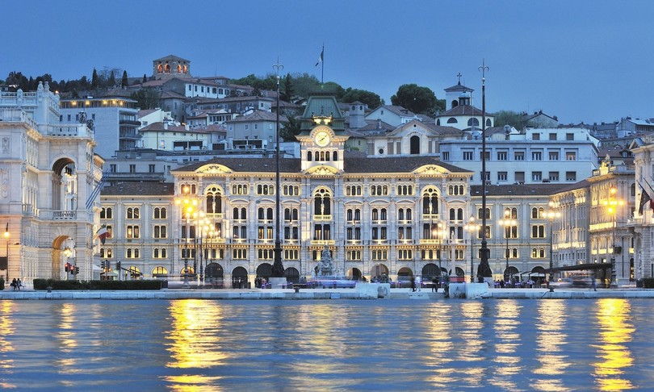
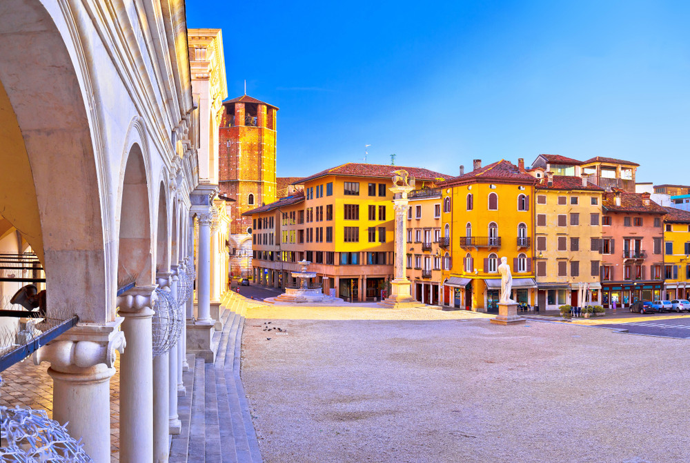
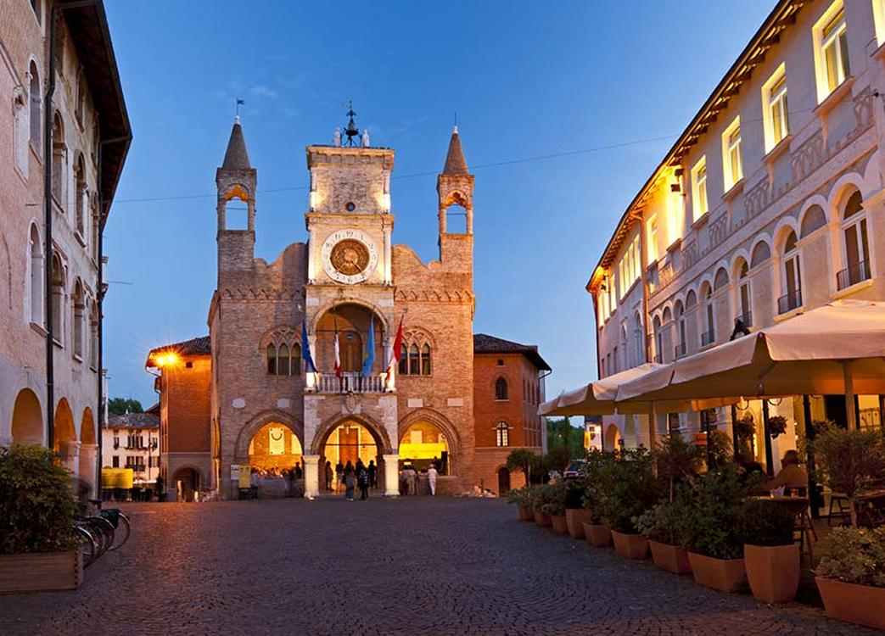
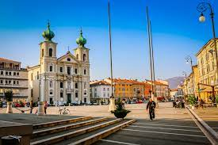
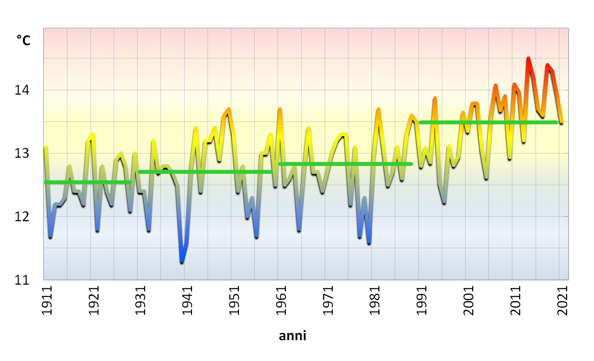

Alla scoperta del Friuli-Venezia Giulia!
| Trieste |
Udine |
Pordenone |
Gorizia |
Informazioni generiche
Il nome Friuli è di origine romana e deriva dalla città di Forum Iulii (ora Cividale del Friuli) fondata da Giulio Cesare verso la metà del I secolo a.C. e divenuta, dopo la distruzione di Aquileia ad opera degli Unni nel 452 d.C., il capoluogo della regione Venetia et Histria, in posizione pedemontana più appartata, ma più sicura. Con le invasioni barbariche il nome, contrattosi nella forma attuale fu esteso a tutta la regione circostante sulla quale la città esercitava la sua giurisdizione, che divenne prima ducato, poi la marca ed infine la contea del Friuli. Anche il nome Venezia Giulia si richiama alla tradizione romana della Venetia et Histria e delle Alpes Iuliae, ricordando il dominio della Repubblica di Venezia e le imprese di Giulio Cesare e di Cesare Ottaviano Augusto, entrambi della Gens Iulia. Esso fu proposto nel 1863 dal glottologo goriziano Graziadio Ascoli.
Il Friuli-Venezia Giulia occupa l'estremità nord-orientale del territorio italiano e ha una superficie di 7845 km². Il territorio regionale è composto dalla regione storico-geografica del Friuli, che costituisce la larghissima maggioranza della sua superficie, e dalla parte di Venezia Giulia rimasta all'Italia dopo la seconda guerra mondiale: la demarcazione tra le due regioni storico-geografiche è costituita dalla foce del fiume Timavo, presso San Giovanni di Duino, al confine delle ex province di Gorizia e Trieste. La regione confina:
a nord con l'Austria (Carinzia - Distretto di Hermagor e Distretto di Villach-Land);
a est con la Slovenia (Alta Carniola, Goriziano sloveno, Litorale-Carso);
a ovest con il Veneto (Bellunese, Veneto Orientale);
a sud con il mare Adriatico (Alto Adriatico).
Evoluzione demografica
Il Friuli-Venezia Giulia è formato da molteplici tradizioni culturali, storiche e produttive. Le province di Udine e Pordenone, zone un tempo agricole depresse, hanno visto negli anni un grande sviluppo industriale e la popolazione possiede un elevato tenore di vita, condizioni similari si sono create nella provincia di Gorizia. La città di Trieste e la sua provincia sono prevalentemente dedite al terziario e godono di un reddito pro capite fra i più alti d'Italia, mentre a livello di singoli comuni capoluogo è Udine a presentare il reddito pro-capite più alto. Per quanto riguarda la distribuzione della popolazione sul territorio, un terzo della popolazione è concentrata nelle aree urbane di Udine (l'agglomerato conta circa 175 000 abitanti in 312 km², che comprende il capoluogo friulano e gli 11 comuni che lo circondano) e di Trieste (considerando l'intera provincia si contano circa 236 000 abitanti in 212 km²), mentre i restanti due terzi della popolazione regionale vive principalmente in piccoli e medi comuni; la montagna è poco popolata.
La regione è stata una delle zone che più ha risentito dei fenomeni migratori, causati da fattori quali l'economia depressa, le varie vicende belliche, i cambiamenti territoriali e il terremoto del 1976. Tra la fine dell'Ottocento e la fine della seconda guerra mondiale, salvo la breve parentesi della prima guerra mondiale, i flussi si sono diretti soprattutto verso l'Argentina e gli Stati Uniti. Con il secondo dopoguerra il fenomeno si invertì momentaneamente visto l'afflusso di migliaia di profughi dall'Istria e da Zara, per poi riprendere quasi contemporaneamente verso l'Europa centrale (Svizzera, Germania, Francia, Belgio), oltreoceano (Stati Uniti, Canada, Australia) e verso la zona del triangolo industriale (Piemonte, Lombardia, Liguria). Solo con gli anni settanta il Friuli Venezia Giulia si trasformò da terra di emigrati in regione ricettrice di flussi migratori provenienti sia dal resto d'Italia, sia, soprattutto, dall'estero. Fra le cause di tale inversione di tendenza vanno segnalate lo sviluppo industriale, profilatosi in forma netta e inequivocabile proprio in quegli anni, e la ricostruzione di parte della regione a seguito del terremoto del 1976, che richiamò in patria anche numerosi friulani.
Udine, Piazza della Libertà
A partire dagli anni ottanta del XX secolo la forte flessione del tasso di natalità che ha colpito con particolare forza il Friuli Venezia Giulia e, più in generale, tutta l'Italia centro-settentrionale è stata così compensata da un vigoroso flusso di immigrati. Tale flusso ha consentito alla regione una dinamica demografica positiva che, seppur molto modesta, non solo non si sarebbe prodotta in assenza degli immigrati, ma sarebbe stata sicuramente di segno negativo. Nel 2019 i nati sono stati 7 495 (6,2‰), i morti 14 318 (11,9‰) con un incremento naturale di −6 823 unità (-5,7‰). Le famiglie contano in media 2,2 componenti.
| Città |
Popolazione |
Superficie |
Densità |
Numero comuni |
| Trieste |
230.623 |
212,50 |
1.085 |
6 |
| Udine |
517.848 |
4.969,23 |
104 |
134 |
| Pordenone |
310.158 |
2.275,35 |
136 |
50 |
Gorizia |
138.666 |
475,40 |
292 |
25 |
Clima

Il clima del Friuli Venezia Giulia passa dal clima submediterraneo delle zone costiere a quello temperato più umido di pianure e zone collinari, fino al clima alpino in montagna.
Secondo i dati 2000-2008 la temperatura annuale media di Trieste è di 15,7°C, mentre quella della pianura va dai 13,5 ai 14,5 °C.
La parte litoranea triestina è anche la più mite della regione, sia per l'influenza del mare più profondo, sia per la parziale protezione dell'altopiano carsico.
Questo tratto di costa gode di un clima tra i più secchi del Paese e, specie nelle minime, risulta quasi sempre sensibilmente più mite del resto della regione, contando in media solo nove minime sottozero (in genere di pochi decimi o di -1 o -2 °C) all'anno.
Invece in alcune zone della pianura le temperature minime possono arrivare fino ai -10 °C e si contano molti più giorni con minime negative.
Sulla costa i venti principali sono la Bora (chiara o scura secondo se si è in presenza di cielo sereno o tempo perturbato rispettivamente) da Est-Nord Est e lo Scirocco da Sud, che si alternano nel corso dell'inverno.
Tuttavia la zona costiera triestina tra Sistiana e Miramare è riparata dalla Bora grazie al ciglione carsico sovrastante, mentre vi risultano esposte Trieste, il resto della costa, la bassa pianura, il cividalese e parzialmente la pianura da Palmanova a Gemona, zone sulle quali il vento nordorientale penetra sfruttando varie valli laterali delle Alpi Giulie.
Maestrale e brezze predominano invece in estate.
La montagna friulana ha un clima più rigido e piovoso e i livelli altimetrici delle nevicate e della vegetazione sono più bassi che nel resto delle Alpi. Tuttavia è sui versanti meridionali dolomitici che troviamo alcune tra le zone più piovose d'Italia e d'Europa.